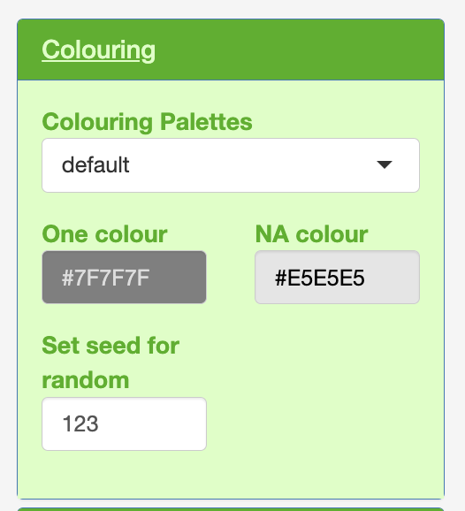
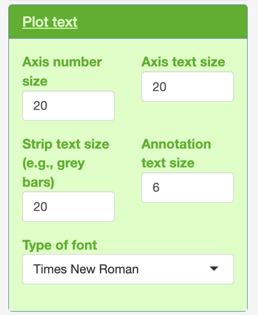
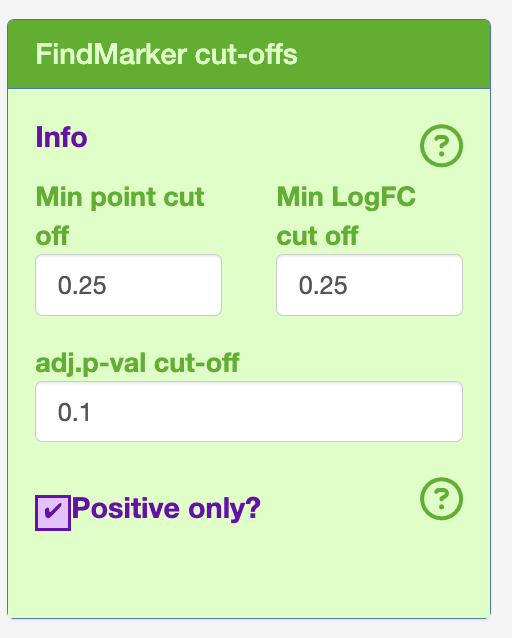
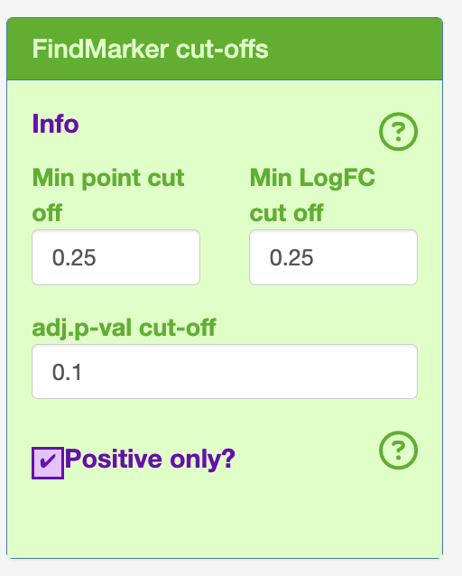
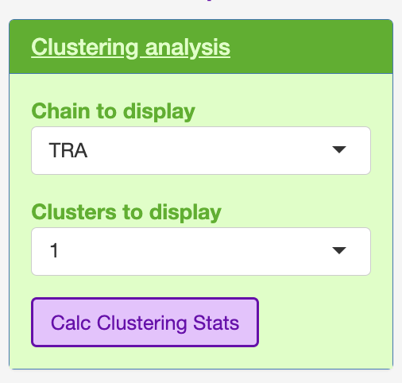
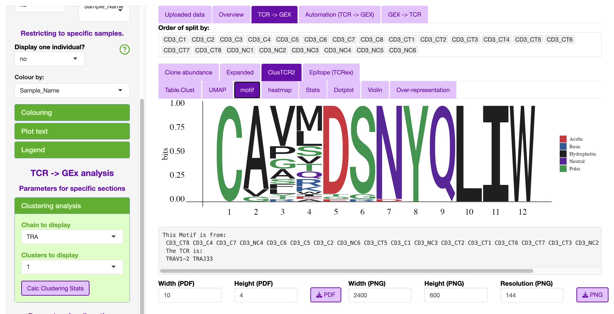
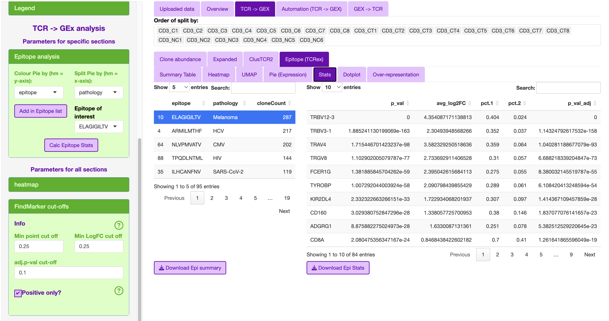
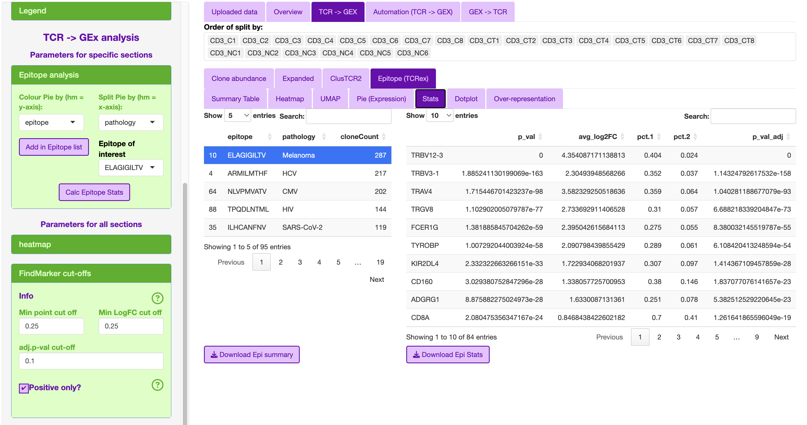

Step 4. Analysis
Note
This section goes over what is present in STEGO.R. The video tutorial will present some examples of each that will depend on specific biological questions.
Application structure
The analysis section is divided into several sub-sections.
Uploaded files
Overview
TCR -> GEX
Automation (TCR -> GEx)
GEx -> TCR
Uploaded files
There first tab will show in the side panel the files that can be uploaded.
Side bar
To streamline the analysis, for this section you will only see the following:

This will include the following default files that can be uploaded: - Upload seurat file (.rds) - Upload AG clusTCR2 file (.csv) - Upload BD clusTCR2 file (.csv) - Upload TCRex (.tsv)
To make selecting the “Data source” and “Species”, there are functions to identify if the TCR-seq formattting is AIRR or not. The species is currently either human (hs) or mouse (mm) and based on the gene formatting of all caps (hs) or proper case (mm). The latter is needed as R is a case sensative language.
If you need additional identifiers for the analysis section, this can be added by switching “add additional labels” to “yes” and upload the “Update_labels.csv”. The file consists of the first column labelled as “ID” must not be changed. This first column must match the unique identifiers used in the “Sample_Name” column for ease of use. The user can add as many columns. Any special characters will be convered to either . or _. An example is given with the colitis dataset that has three broad categories under the condition column. The user can then add additional variables that could be used for analysis.This was added to the analysis section, so the user does not have to go back to Step 1, and is also restrictive to one unique label.

ID |
Condition |
|---|---|
CD3_C1 |
colitis |
CD3_C2 |
colitis |
CD3_C3 |
colitis |
CD3_C4 |
colitis |
CD3_C5 |
colitis |
CD3_C6 |
colitis |
CD3_C7 |
colitis |
CD3_C8 |
colitis |
CD3_CT1 |
normal control |
CD3_CT2 |
normal control |
CD3_CT3 |
normal control |
CD3_CT4 |
normal control |
CD3_CT5 |
normal control |
CD3_CT6 |
normal control |
CD3_CT7 |
normal control |
CD3_CT8 |
normal control |
CD3_NC1 |
no colitis |
CD3_NC2 |
no colitis |
CD3_NC3 |
no colitis |
CD3_NC4 |
no colitis |
CD3_NC5 |
no colitis |
CD3_NC6 |
no colitis |
CD3_NC7 |
no colitis |
CD3_NC8 |
no colitis |
Main panel
Depending on what you have uploaded, the main panel will render several tables. The first table is of the Seurat object’s meta-data and you will see how it adds the additional labels after the “Sample_Name” column.
Uploaded example of the colitis complication to melanoma therapy dataset (GSE144469)

Side bar (Analysis sections)
The side bar has variables that may be relevant to the all analyses, or only a specific section.
The variables common to the analysis section include:
V gene with/without CDR3
Selected Sample
- Restricing to one sample for filtering purposes
The purpose of the restrict to one sample can be to only show one individual in the overview section. Under the clonal abudance, this will change the summary table to represent only the individual of interest.
Colouring
Plot text
Legend
{kind=link}
Within each of the colouring, plot text and legend.
 {kind=link}
{kind=link}

Overview
The purpose of this section was to be able to interrogate the overview of the GEx only population dynamics regardless of TCR-seq and visa versa with TCR-seq only.
Side bar (OV only)
There are two aspects that are specific to the overview section that includes splitting the graphs based on the “selected sample”, adn in the TCR section for colouring by the binned clone counts, clone frequency or top expanded clones.


Main panel (OV)
The GEx section contains the following sections: GEx and TCR
GEx
This section focuses on a general interrogation of the annotations regardless of TCR
- Percentage
This section is divided into percentage (Selected sample vs Colour by:) and can be downloaded as a .csv file.
- UMAP plot
This can be have the full dataset or split by selected samples.
Samples can be removed from the “Order of graph (Selected Sample)”
Additionally, as there can be overlapping with labels, the user can chose in the “Show all labels?” to show all or selected.
- Summary chart
As we used the semi-supervised annotation stratergy, this usually causes lots of overlap in the UMAP plot.
The user can display the “Colour by:” as any of the variables as either a pie chart or bar plot.

TCR
This section focuses on TCR expansion, and include replicating features from scRepertoire i.e., clonal expansion presented on the UMAP.
- Overlap
Summary table to show the clonal expansion based on the Selected Sample column
Upset table that is “V gene with/without CDR3” vs “Selected Sample”
If <31 groups to compare, it will render an UPSET plot. This is a type of VENN diagram for more complex comparisons. The top bar represents the unique clones that overlapped the samples if there was a dot and line connection. The right bar graph is the unique clones for each sample
- Line Graph
This section was developed for explore multi-sample/time series based data
The way the samples were labelled can split the text by - . etc.
- Clonal expansion plot
bar plot of the clonal
- Clonality (counts)
UMAP plot
Note: Clonal expansion plot and Clonality (counts) variable can be changed with counts (Number_expanded), frequency (Frequency_Expanded) or most abundant clones (Top_clonotypes).

TCR -> GEx
This section is split into four subsections.
Clonal abudance
Exapanded
ClusTCR
Epitope
Sidebar common features

- Heatmap
The user can change the zero, from one count, maximum count colouring scale.
This is based on total counts, and I have not yet developed a frequency scaling.
- Cut-offs for FindMarker (Defaults)
logFC = 0.25
Minimum point count = 0.25
adjusted p-value = 0.1
Bins for the dot plot (changed from seruat default 25 to 10).
- Dot plot
Change the colours of the normalised expression from lower, mid and high.
Also the dotplot will by default only display the 30 most significant transcripts. This was chosen based on developer preference of high quality figures with the default text sizes.
- Violin plot
The user can keep in the point (jitter)
The user can alter the transparancy of the violin plot. This is needed as the jittered dot points are behind the violin layer in the graph.
 

{kind=link}


Clonal abundance
The purpose of the clonal abundance section is for the interrogation of single clones or groups of clones.
The user can select the type of comparison to:
- Background (BG)
This will compare the selected clone(s) to the rest of the data provided.
- singlets
This will compare the selected clone(s) to the cells with a TCR based on the “V gene with/without CDR3” that were only observed once in the data, as these are less likely to be antigen specific.
- Clones
compair to a specific clone(s). This will bring up the ident.2 to select the clones.
In order to render the table efficiently, I have included a filter under the clonal abundance section to the top 50, as well as included a minimum count threshold (default = 2).


Expansion
This section was aimed to interrogate if there was a consistant gene expression signature of the expanded clones regarless of the TCR arragement.
The sidebar contains some variables to help decide on what the count cut-off could be.
The “Cut off greater than” helps calculate by defaul the D50, or the count above which 50% of the repertiore is represented. This is used to calculate “Cut off greater than” count.
 I have also used this section in the STEGO.R V3 preprint for compairing the before and after treatment of a single clone.
I have also used this section in the STEGO.R V3 preprint for compairing the before and after treatment of a single clone.ClusTCR2
This section will look into the clusters produced in STEP 2.
The user can select which chain they wish to interrogate e.g., TRA, TRB, TRG and TRD, as well as which cluster to interrogate.
The clsuters are ordered in how many total TCR were assocaited with a specific cluster.
The only additional plot that the user can interrogate is the motif.
 {kind=link}
{kind=link}
Epitope (TCRex)
This epitope section was designed to interrogate the TCRex outputs in STEGO.R.
This section includes in the sidebar to add the TCR headers to the meta-data including the epitope and pathology.
The epitope list is ordered based on TCR with the most sequences.
The top associated epitope for the colitis compliation to melanoma treatment was the melanoma epitope ELAGIGILTV.
 

{kind=link}
Automation (TCR -> GEX)
- Clonotype
Download public (bar graphs), summary table, dot plot for each public-like clone
Download private (single sample)
Can restrict based on the calculated priority 1/(sample total * total count)
- Cluster
- Download the motif, summary table, dot plot for each public-like and private clusters
A common cluster is TRAV1-2 TRAJ33
separate alpha and beta cut-offs
Priority: 1/(number of nodes * sample total * total count)
- Epitope/Annotation
with the epitopes find the associated epitopes from TCRex
Unselect “Add in Epitope data” to focus on the annotations. So, you can identify the TCR linked to specific annotation models (e.g., FunctionTcell)
GEx -> TCR
- Annotation
No longer being developed.
- Marker
Single marker
Dual marker